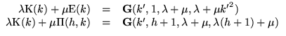
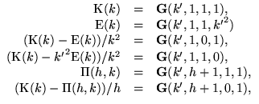
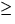
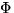
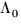
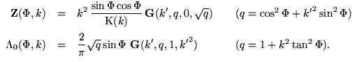

Special examples are
If ab 0 then G will evaluate any linear combination of K(k), E(k), (h, k) without cancellation (such as would occur, for example, if (K(k) -E(k))/k2 were to be computed from values of K(k) and E(k) which had been computed separately.Other functions which can be represented by G are the Jacobian Zeta function Z(, k) and the Heuman Lambda function (, k) (see Ref. 5):

(Quoted from Ref. 3, slightly modified).